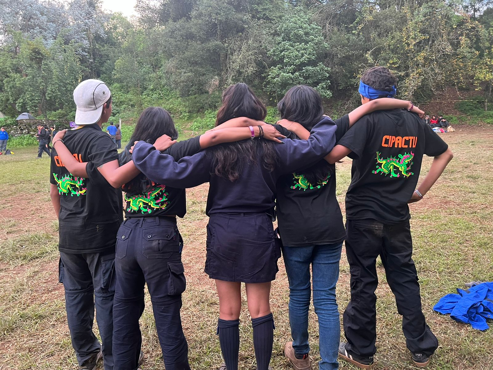
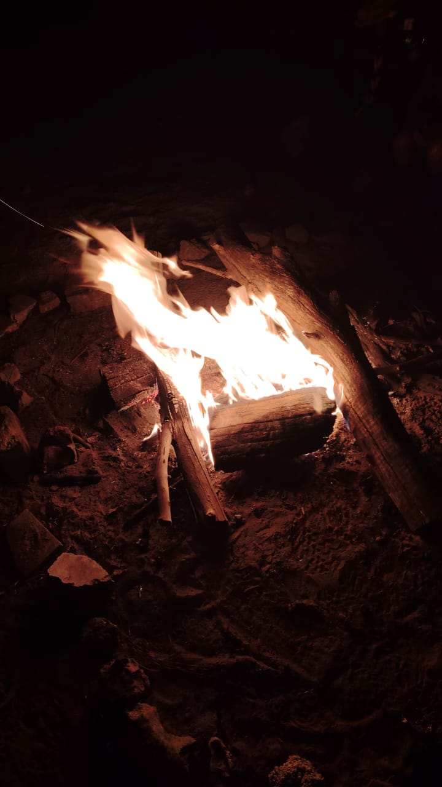
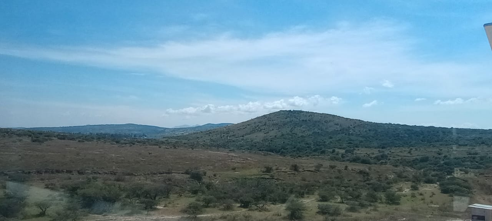

Bienvenidx
Este blog es un pequeño espacio donde comparto mis fotos favoritas de algunos recuerdos que vivo como Scout.
Galería

Campamento al amanecer

La fogata que nunca olvidaré

Un sendero que recorrimos juntas

Hermosas amistades que te encuentras en el camino
Mi recuerdo favorito 🌿
Una de las mejores experiencias que he tenido es aquel campamento lleno distintas emocione. Estábamos rodeadas de árboles, el cielo lleno de neblina en la mayoría de tiempo. Después de esa semana entendí lo mágio que es ser Scout, experimentar diferentes emociones pero siempre acompañado de tus amigos y dirigente .